Animations, infographics, and annotations
2025-04-02
Announcements, previously, and today…
HW7 is due TONIGHT March April 2nd by 11:59 PM ET
You do NOT have lab this week - CARNIVAL!
Last time:
Fundamental characteristic of time series data: measurements are dependent over time
Plotting moving averages is the most common way to visualize time series data
The things to look out for in time series data are: (1) Average trends, (2) Seasonality, (3) Noise
TODAY: Animations, infographics, and annotations
Storytelling with animation…
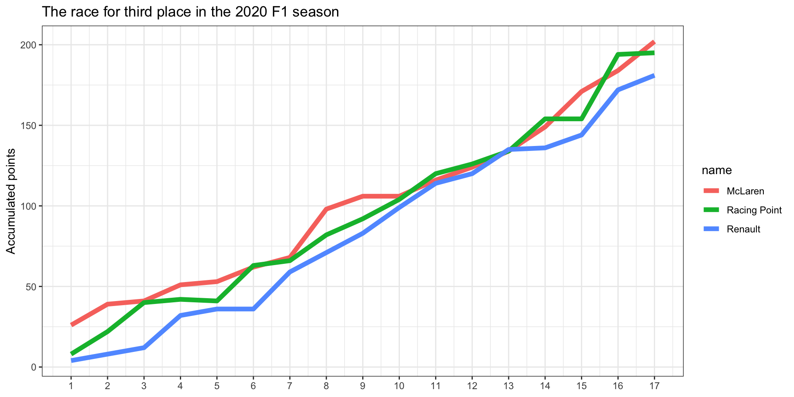Use gganimate to add animations
library(gganimate)
f1_data_ex |>
ggplot(aes(x = round, y = points, group = name, color = name)) +
geom_line(size = 2) +
scale_x_continuous(breaks = seq(1, 17, 1)) +
labs(title = "The race for third place in the 2020 F1 season",
y = "Accumulated points", x = NULL) +
theme_bw() +
transition_reveal(round)Using animation to add a dimension
txhousing |>
group_by(city, year) |>
summarize(median = mean(median, na.rm = TRUE),listings = mean(listings, na.rm = TRUE)) |>
ggplot(aes(x = median, y = listings, color = (city == "Houston"),
size = (city == "Houston"))) +
geom_point(alpha = 0.5, show.legend = FALSE) +
scale_color_manual(values = c("black", "darkred")) +
scale_size_manual(values = c(2, 4)) +
scale_x_continuous(labels = scales::dollar, name = "Median Price") +
scale_y_continuous(labels = scales::label_number(scale_cut = scales::cut_short_scale())) +
theme_bw() +
labs(x = "Median Price", y = "Avg. of Monthly Listings",
subtitle = "Houston in red")Using animation to add a dimension

Using animation to add a dimension
txhousing |>
group_by(city, year) |>
summarize(median = mean(median, na.rm = TRUE), listings = mean(listings, na.rm = TRUE)) |>
ggplot(aes(x = median, y = listings, color = (city == "Houston"),
size = (city == "Houston"))) +
geom_point(alpha = 0.5, show.legend = FALSE) +
scale_color_manual(values = c("black", "darkred")) +
scale_size_manual(values = c(2, 4)) +
scale_x_continuous(labels = scales::dollar, name = "Median Price") +
scale_y_continuous(labels = scales::label_number(scale_cut = scales::cut_short_scale())) +
theme_bw() +
labs(x = "Median Price", y = "Avg. of Monthly Listings",
subtitle = "Houston in red", title = "Year: {frame_time}") +
transition_time(year) Using animation to add a dimension
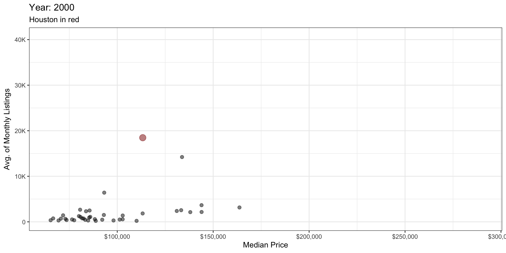
Reminders about animation
Some key points to think about before adding animation to a visualization:
- Always make and describe the original / base graphic first that does NOT include animation.
- Before adding animation to the graph, ask yourself: How would animation give you additional insights about the data that you would otherwise not be able to?
- Never add animation just because it’s cool!
- When presenting, make sure you explain exactly what is being displayed with animation and what within the animation you want to emphasize. This will help you determine if animation is actually worth including.
Creating compound figures
Two different scenarios we may face:
- Creating the same type of plot many times
- e.g., using
facet_wrap()orfacet_grid()
- Combining several distinct plots into one cohesive display
Creating the same type of plot many times
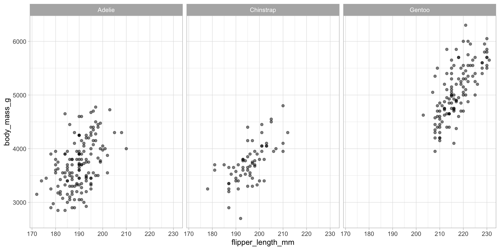Creating the same type of plot many times
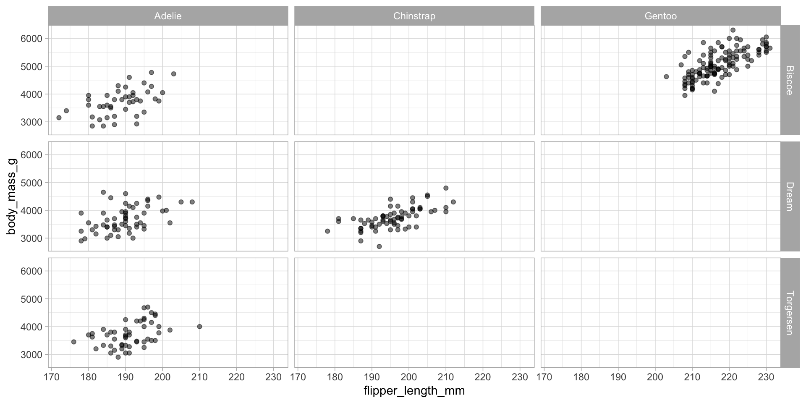Creating a single cohesive display of multiple plots
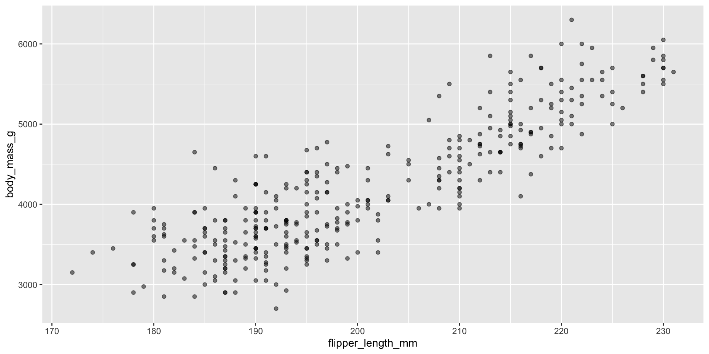Creating a single cohesive display of multiple plots
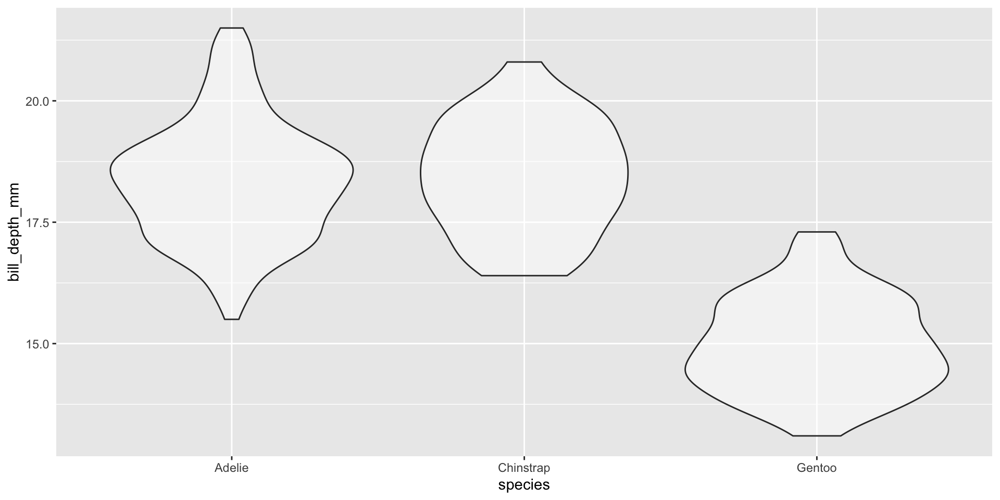Using cowplot to arrange plots together
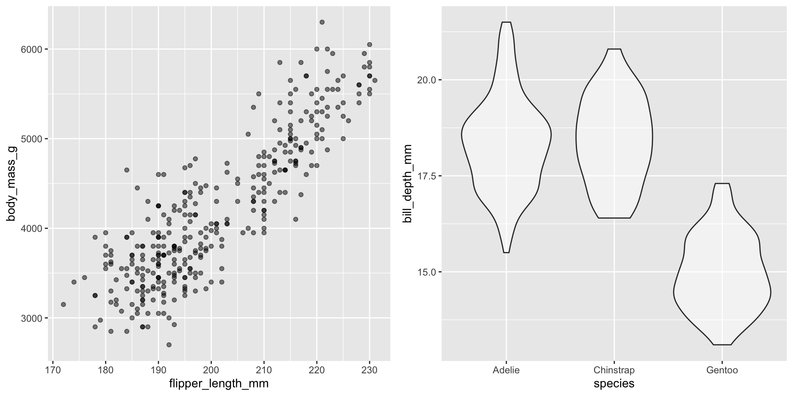Using cowplot to arrange plots together
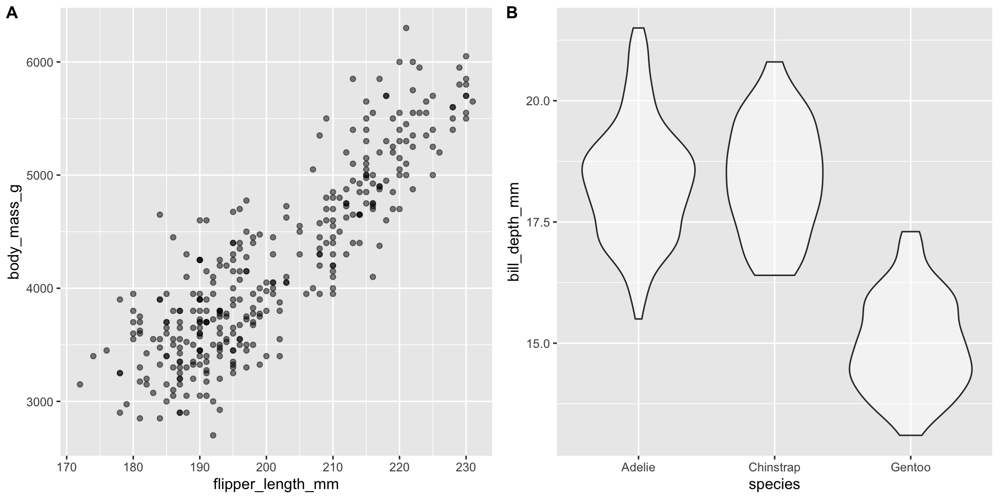Using patchwork to arrange plots together
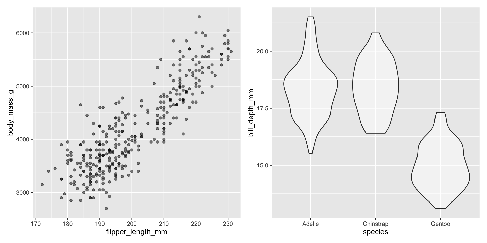Using patchwork to arrange plots together
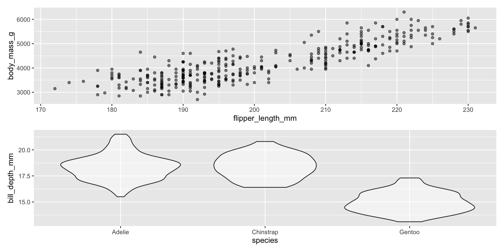Using patchwork to arrange plots together
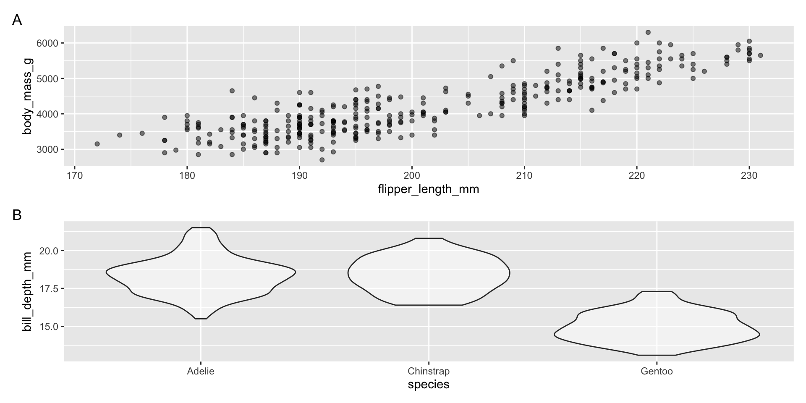Using patchwork to arrange plots together
Using patchwork to arrange plots together
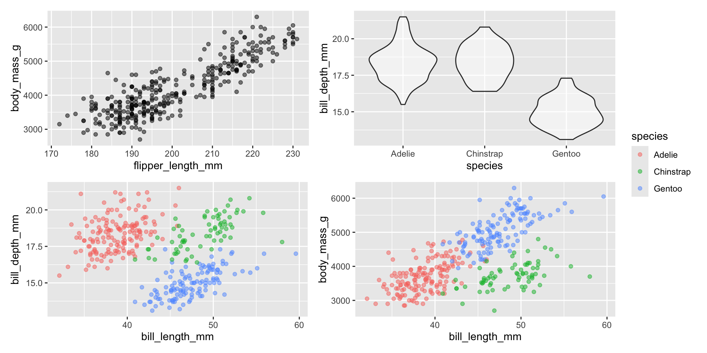
Using patchwork to arrange plots together
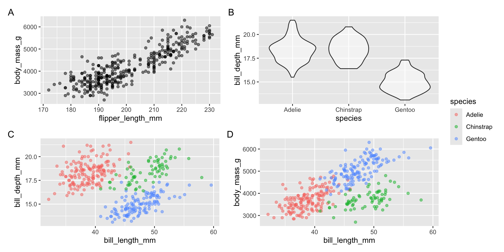Using patchwork to arrange plots together
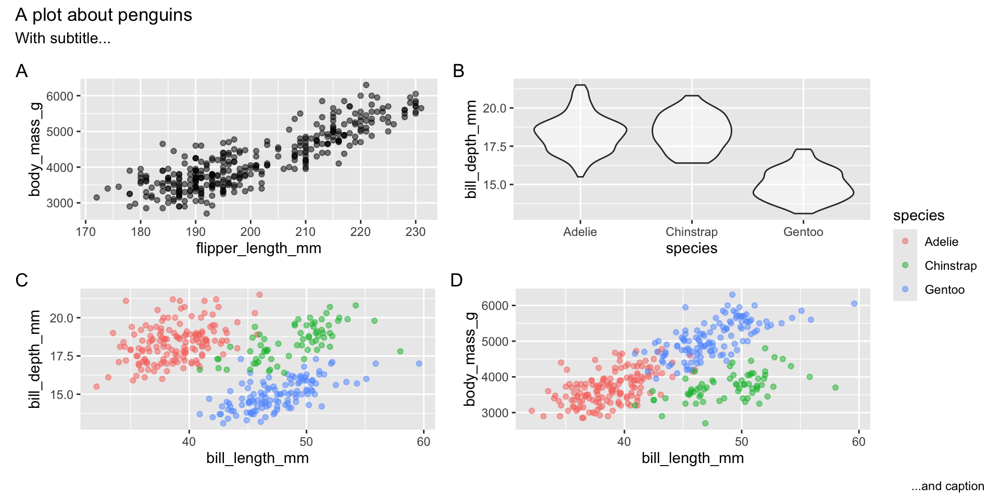Infographics vs figures in papers/reports
- Infographics should standalone, thus they must have a title along with a relevant subtitle and caption (located within the plot)

Infographics vs figures in papers/reports
- Figures in papers/reports will have captions containing the information from the standalone title/subtitle/caption, see example:

Figure 1. Corruption and human development. The most developed countries experience the least corruption. Data sources: Transparency International & UN Human Development Report.
Thinking about themes…
See posted demo walking through color scales and customizing themes
Default choices tend to treat each element with equal weight, e.g., axes stand out as much as the data or background elements look the same as the points of emphasis
You want to design your plot with the visual hierarchy in mind:
Make elements of your plot that are more important look more important!
i.e., customize your plot so that the data is the focus, not the axes and grid lines!
Match visual weight to focus of the graphic you want to communicate
I tend to use theme_bw() or theme_light(), but there are other options from various packages such as ggthemes
Using patchwork to arrange plots together
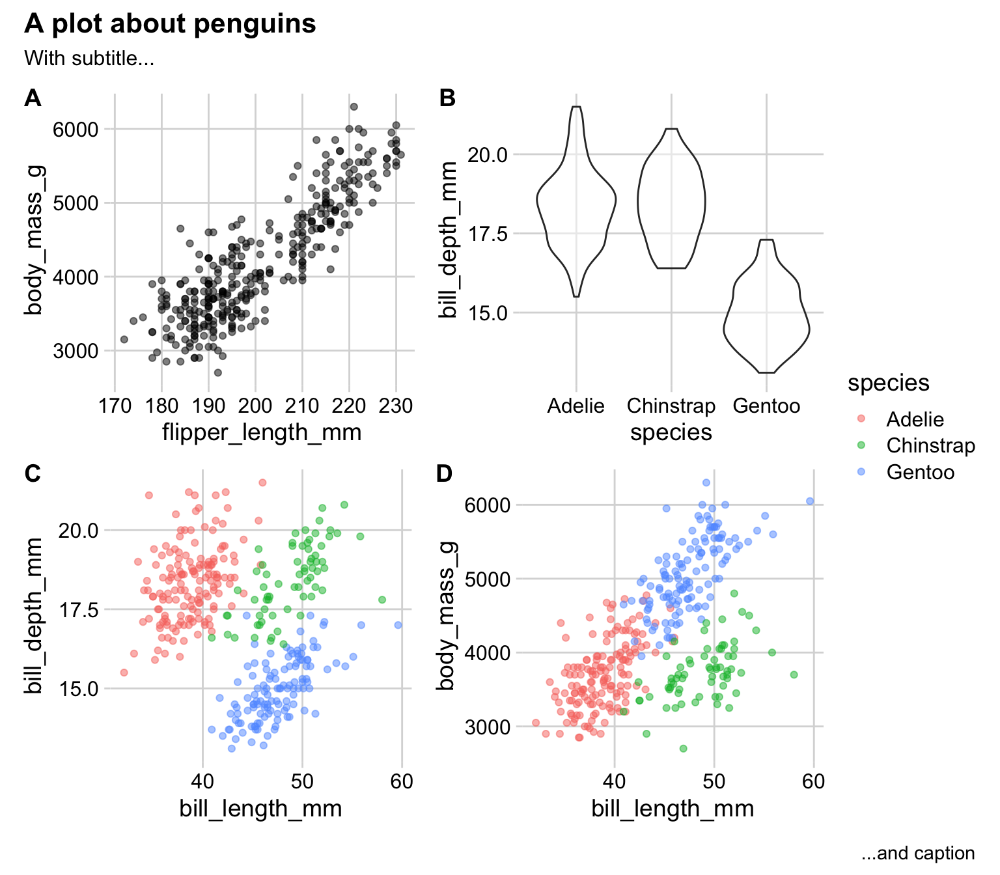Annotation
Using text can be a great way to highlight and explain aspects of a visualization when you’re not there to explain it
annotate()is an easy way to add text to ggplot objects or add rectangle layers for highlighting displays
Annotation tools
- We’ve discussed
gghighlightandggrepel, butdirectlabelsandggforceare also useful
Saving plots and ggplot extensions
Default function for saving the last ggplot you created is
ggsaveI tend to use the
save_plot()function fromcowplotsince it has easier customization for handling panels of multiple figuresThere are a wide number of
ggplot2extension packages for various different purposes, you can check them out in this gallery
Recap and next steps
Discussed the role of animation in visualizations
Discussed various aspects of making high-quality graphics and relevant tools
HW7 is due TONIGHT!
ENJOY CARNIVAL!
Recommended reading:
gganimatepackage, CW Chapter 21 Multi-panel figures, CW Chapter 23 Balance the data and the context, KH Chapter 8 Refine your plots